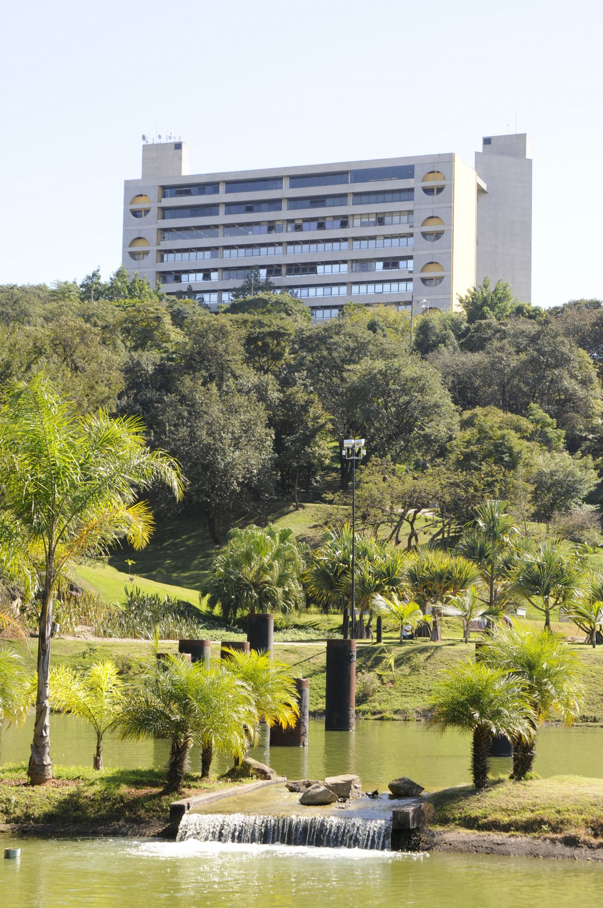

JARDIM BOTÂNICO JUNDIAÍ
Inaugurado em 29 de dezembro de 2004, o Jardim Botânico de Jundiaí conta com uma área de 150.000 m², vários jardins temáticos, entre eles japonês com uma pequena cascata, africano com plantas típicas da região, e italiano, com vários canteiros e estátuas. Possui ainda um pequeno espaço dedicado às plantas aromáticas e medicinais, viveiros de mudas, estufa de cactáceas e suculentas, orquidário, cachoeiras, trilhas e ciclovias que ligam o Jardim Botânico ao Parque da Cidade.
As espécies de plantas estão catalogadas e identificadas e a fauna é composta por várias espécies de borboletas, aves, roedores, lagartos, peixes e outros animais.
- Endereço: Av. Antônio Frederico Ozanam, 6400 / Av. Navarro de Andrade, 120 – Jardim Botânico
- Telefone: (11) 4523-1012 / 4582-2468
- E-mail: jardimbotanico@jundiai.sp.gov.br
- Site: www.jardimbotanico.jundiai.sp.gov.br
- Horário de Funcionamento: Diariamente das 7h às 16h.
Jardim Botânico jundiaí
O Jardim Botânico Jundiaí está localizado no Endereço: Av. Antônio Frederico Ozanam, 6400 / Av. Navarro de Andrade, 120 – Jardim Botânico.